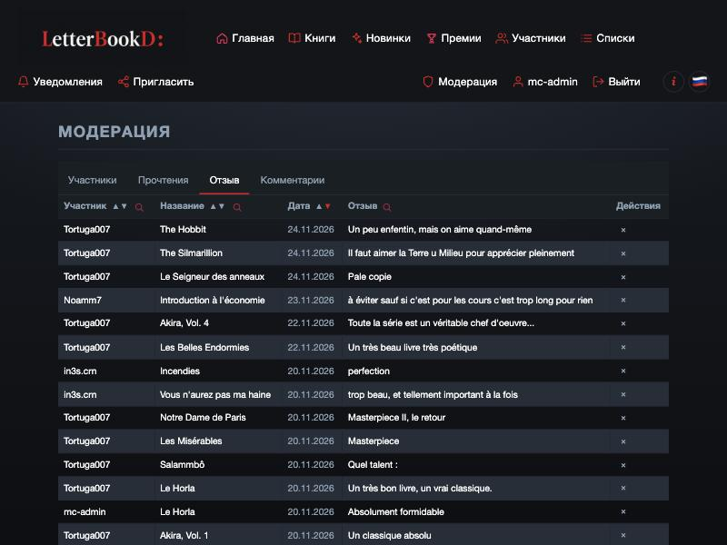

Модерация — Отзывы Только для админов
Зачем это нужно: Все отзывы, написанные в клубе, с фрагментом текста. Позволяет администраторам быстро удалить неуместный отзыв, не трогая саму запись о чтении.

Как это устроено
Таблица: Участник (автор отзыва), Название (книга), Дата (дата отзыва), Отзыв (фрагмент текста), Действия (крестик для удаления). Колонка «Отзыв» сортируется и фильтруется по тексту: удобно искать ключевое слово, из-за которого поступила жалоба. Удаление отзыва убирает только текст, но сохраняет запись о чтении (оценку и статус), так что оценка участника остаётся в среднем.
Цепочки действий
Каждая строка — это триггер в интерфейсе, модалка или форма, которые он открывает, и результат.
| Триггер | Модалка / Поля | Эффект |
|---|---|---|
| Значки сортировки и фильтра (лупа в колонке «Отзыв») | — | Стандартная сортировка; текстовый фильтр по содержимому отзыва. |
| Кнопка крестика (×) в строке | Подтверждающая POST-форма. | Удаляет ТОЛЬКО текст отзыва. Оценка остаётся, запись о чтении остаётся, привязанные комментарии остаются, но теряют контекст. |